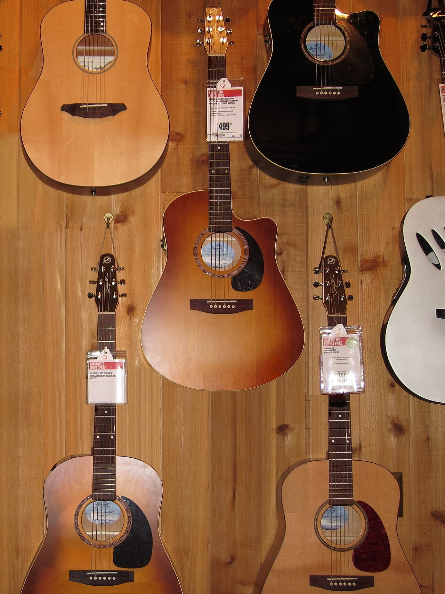

Как выбрать первую электрогитару: семь честных критериев
Разбираем, на что смотреть новичку и за что действительно стоит доплатить, а на чём можно
спокойно сэкономить. Без маркетинга — только то, что слышно и чувствуется в руках.

Перед покупкой стоит подержать в руках несколько инструментов одного ценового уровня.